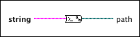

Command Line String to Path VI
Owning Palette: Path/Array/String Conversion Functions
Requires: Base Development System (macOS)
Converts the string you specify into a path. The input string must describe a path in the standard command line path format of the current platform. This VI formats the path output according to the path format of the current LabVIEW bitness. LabVIEW (32-bit) uses : path separators. LabVIEW (64-bit) uses / path separators. Use this VI to format paths you receive from the platform command line for use with LabVIEW.

 Add to the block diagram Add to the block diagram |
 Find on the palette Find on the palette |